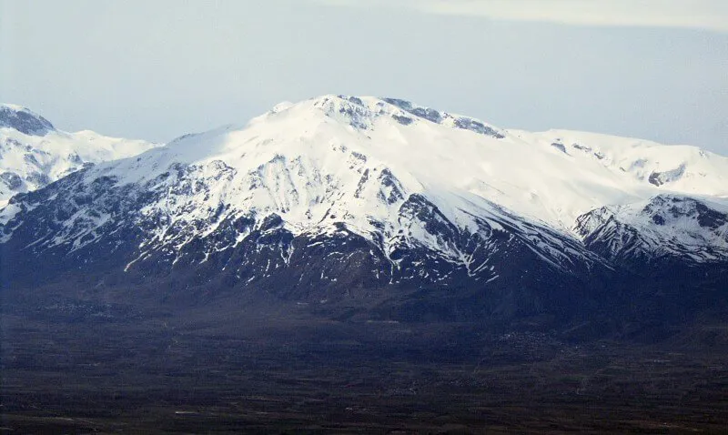

Toros dağlarının bir uzantısı olan bu dağlar, Erzincan’ın güneyi ile Tunceli’nin kuzeyinde yer almaktadır. Volkanik kayalardan oluşan bu dağ, 3 bin metreyi aşan toplam 10 adet zirveye sahiptir. Bu özellikleri ile Munzur dağları Doğu Anadolu bölgesinin batı kısmındaki en yüksek dağ zinciri olma özelliğini taşımakta.Munzur dağının yüksek kayalık yapısı, alana geçit vermediği için, burası tamamen insan eline uzak bir bölge. Munzur dağlarının yüksek olan kesimlerinde dağ çayırları ve kaya habitatları bulunuyor. Ovacık ilçesine yakın olan kalıntılar ise Munzur dağlarının sahip olduğu doğal zenginliklerden sadece bir tanesi.
